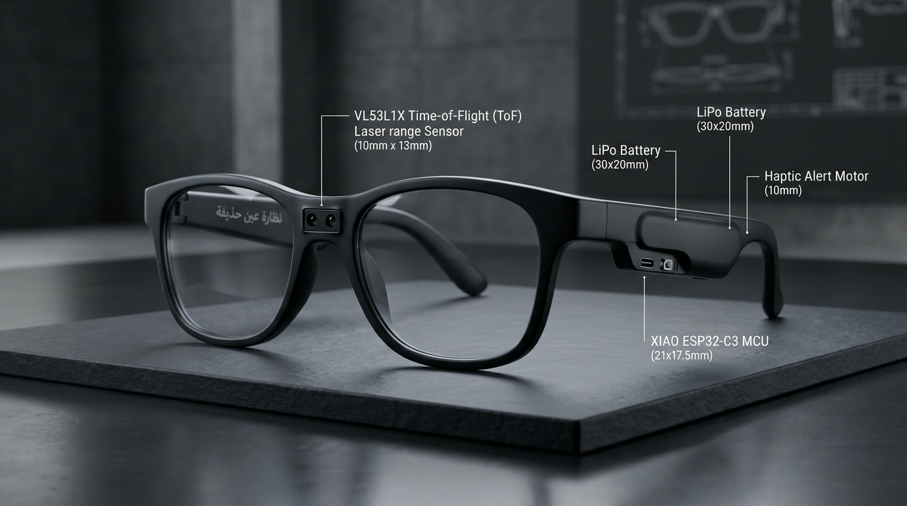
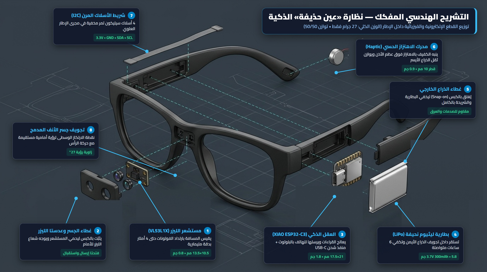

نظام بصري-إلكتروني مدمج يرتديه الكفيف كنظارة عادية، يعتمد على مستشعر مسافة ليزري (ToF) فائق الدقة، متصل لاسلكياً عبر تقنية Bluetooth Low Energy (BLE) بتطبيق «عين حذيفة» ليحوّل البيئة المحيطة إلى رادار صوتي واهتزازات لمسية ترشد الكفيف إلى العوائق والمسافات بأمان كامل.

* تظهر النظارة بتصميم عصري وخفيف (27 جم)، المستشعر غائر في جسر الأنف الأمامي والمعالج والبطارية مخفيان داخل ذراع النظارة الأيمن.
يوضح المخطط التشريحي التالي تفكيك النظارة إلى قطعها الـ 8 الأساسية وكيفية استقرار كل قطعة داخل تجويفها الخاص بدون أي أسلاك ظاهرة:

يطلق المستشعر (1) نبضة ضوء غير مرئية تصطدم بالعائق وترتد، فيحسب المسافة من سرعة الضوء في أقل من جزء من الألف من الثانية ليلاً ونهاراً.
الأنف لا يحمل سوى المستشعر (0.8 جم فقط)، بينما تستقر البطارية والمعالج فوق الأذن اليمنى والهزاز فوق الأذن اليسرى فلا تنزلق النظارة أبداً.
يلامس محرك الاهتزاز (6) عظم الخُشّاء خلف الأذن اليسرى لينقل التحذير الحسي مباشرة دون إشغال سمع الكفيف عن أصوات الطريق والسيارات.
تُغلق الأغطية (2 و5) بحواف مرنة تُكبس داخل الإطار بصوت «تَك» محكم يحمي الدوائر من الغبار والعرق ويسهّل الصيانة.
تم تصميم النظارة لتكون أخف وزناً من النظارات الشمسية العادية، بحيث يتركز المستشعر في المنتصف وتتوزع الأجهزة بالتساوي بين الذراعين:
| المكون العتادي | الموديل الهندسي | الأبعاد الفعلية | الوزن | الموقع بالنظارة |
|---|---|---|---|---|
| مستشعر المسافة الليزري | VL53L1X (Time-of-Flight) | 10.5 × 13.5 × 2.5 مم | 0.8 جم | جسر الأنف (مواجه للأمام) |
| المتحكم الدقيق + BLE | Seeed Studio XIAO ESP32-C3 | 21.0 × 17.5 × 3.5 مم | 1.8 جم | الذراع الأيمن (خلفي) |
| بطارية ليثيوم نحيفة | LiPo 3.7V (مقاس 502030 - 300mAh) | 30.0 × 20.0 × 5.0 مم | 5.8 جم | تجويف الذراع الأيمن الداخلي |
| محرك الاهتزاز اللمسي | 1027 Coin Vibration Motor | قطر 10 مم × سمك 2.7 مم | 0.9 جم | الذراع الأيسر (فوق عظم الأذن) |
| هيكل النظارة والأسلاك | TR90 Frame + 30AWG Silicone | عرض 142 مم - ذراع 140 مم | 17.7 جم | الهيكل الحامل المريح |
يتصل مستشعر المسافة بالمتحكم عبر بروتوكول I2C بأربعة أسلاك فقط، ويتصل محرك الاهتزاز بمنفذ رقمي مباشر:
* ملاحظة: شريحة XIAO ESP32-C3 تحتوي على شاحن مدمج للبطارية، يكفي توصيل كابل USB-C في أسفل الذراع لإعادة شحن النظارة بأمان في 35 دقيقة.
الكود الكامل للشريحة، يقرأ المستشعر ويرسل المسافات كـ Notifications عبر البلوتوث المنخفض الطاقة (BLE) بنفس الـ UUIDs المعتمدة في تطبيق عين حذيفة:
#include <Wire.h>
#include <VL53L1X.h>
#include <BLEDevice.h>
#include <BLEServer.h>
#include <BLEUtils.h>
#include <BLE2902.h>
// UUIDs متطابقة مع تطبيق عين حذيفة (js/views/ray.js)
#define SERVICE_UUID "0000ffe0-0000-1000-8000-00805f9b34fb"
#define CHARACTERISTIC_UUID "0000ffe1-0000-1000-8000-00805f9b34fb"
#define HAPTIC_PIN D1 // محرك الاهتزاز في الذراع الأيسر
VL53L1X sensor;
BLECharacteristic *pCharacteristic;
bool deviceConnected = false;
class MyServerCallbacks: public BLEServerCallbacks {
void onConnect(BLEServer* pServer) { deviceConnected = true; }
void onDisconnect(BLEServer* pServer) {
deviceConnected = false;
BLEDevice::startAdvertising(); // إعادة الإعلان تلقائياً
}
};
void setup() {
Serial.begin(115200);
pinMode(HAPTIC_PIN, OUTPUT);
Wire.begin(); // SDA=D4, SCL=D5 on XIAO ESP32-C3
Wire.setClock(400000); // 400kHz Fast I2C
sensor.setTimeout(500);
if (!sensor.init()) {
Serial.println("فشل تهيئة مستشعر VL53L1X!");
while (1) { delay(100); }
}
sensor.setDistanceMode(VL53L1X::Long); // مدى يصل إلى 4 أمتار
sensor.setMeasurementTimingBudget(33000); // قياس سريع كل 33ms (~30 FPS)
sensor.startContinuous(33);
// تهيئة البلوتوث باسم Hudhaifa Glasses
BLEDevice::init("Hudhaifa Smart Glasses");
BLEServer *pServer = BLEDevice::createServer();
pServer->setCallbacks(new MyServerCallbacks());
BLEService *pService = pServer->createService(SERVICE_UUID);
pCharacteristic = pService->createCharacteristic(
CHARACTERISTIC_UUID,
BLECharacteristic::PROPERTY_READ |
BLECharacteristic::PROPERTY_NOTIFY
);
pCharacteristic->addDescriptor(new BLE2902());
pService->start();
BLEAdvertising *pAdvertising = BLEDevice::getAdvertising();
pAdvertising->addServiceUUID(SERVICE_UUID);
pAdvertising->start();
Serial.println("نظارة حذيفة جاهزة للاقتران عبر البلوتوث!");
}
void loop() {
uint16_t distMm = sensor.read();
uint16_t distCm = distMm / 10; // تحويل لسنتيمتر
if (deviceConnected) {
// إرسال المسافة بالسنتيمتر بصيغة Uint16 Little-Endian للتطبيق
uint8_t data[2] = { (uint8_t)(distCm & 0xFF), (uint8_t)((distCm >> 8) & 0xFF) };
pCharacteristic->setValue(data, 2);
pCharacteristic->notify();
}
// تنبيه اهتزازي مباشر في النظارة عند الاقتراب الشديد من عائق (< 60 سم)
if (distCm > 0 && distCm < 60) {
digitalWrite(HAPTIC_PIN, HIGH);
delay(40);
digitalWrite(HAPTIC_PIN, LOW);
}
delay(40); // تردد تحديث متوازن لتوفير طاقة البطارية
}يتصل تطبيق «عين حذيفة» بالنظارة مباشرة من متصفح الهاتف أو الكمبيوتر بدون الحاجة لتثبيت أي تطبيق وسيط، مستفيداً من معيار navigator.bluetooth:
// كود جافاسكريبت المعتمد في تطبيق عين حذيفة (قسم الرادار)
async function connectGlasses() {
const device = await navigator.bluetooth.requestDevice({
filters: [{ namePrefix: 'Hudhaifa' }],
optionalServices: ['0000ffe0-0000-1000-8000-00805f9b34fb']
});
const server = await device.gatt.connect();
const service = await server.getPrimaryService('0000ffe0-0000-1000-8000-00805f9b34fb');
const char = await service.getCharacteristic('0000ffe1-0000-1000-8000-00805f9b34fb');
await char.startNotifications();
char.addEventListener('characteristicvaluechanged', (e) => {
const val = e.target.value;
const distCm = val.getUint16(0, true); // قراءة المسافة بالسنتيمتر
const distM = distCm / 100; // تحويل للمتر
// تشغيل نبضات السونار الصوتي المتغير مع اقتراب العائق
playSonarBeep(distM);
});
}يمكن تصنيع هيكل النظارة بطريقتين متاحتين لأي مطور أو معمل مدرسي/جامعي:
طباعة كليبس جسر الأنف وغلاف الذراع بخامة Resin أو SLS Nylon لتكون ناعمة ومطابقة للنظارات الطبية. الملفات جاهزة بمجلد 3d_models/:
شراء نظارة بلوتوث رخيصة (~6$) من AliExpress وتفريغ البوردة القديمة، ووضع شريحة XIAO والبطارية في نفس التجاويف مسبقة الصنع.
ain-app.workers.dev والضغط على زر "اقتران بالنظارة"، يتعرف المتصفح مباشرة على النظارة وتعمل فوراً على هواتف أندرويد والحواسيب.